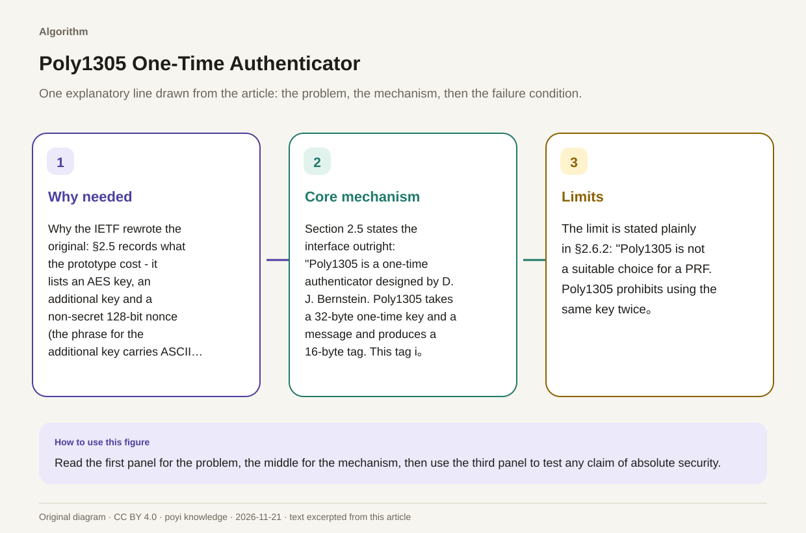
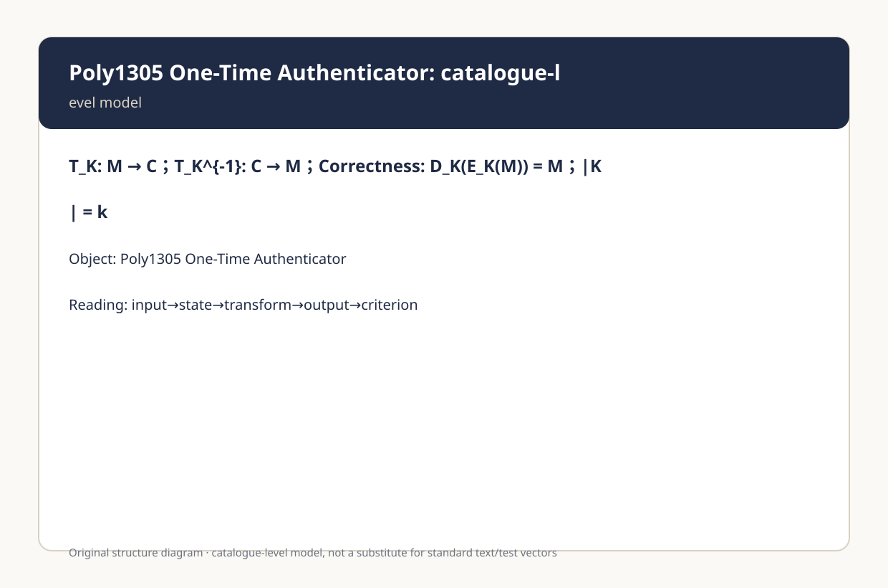

Principles
Algorithm: Poly1305 (Poly1305 通用 MAC). Section 2.5 states the interface outright: "Poly1305 is a one-time authenticator designed by D. Bernstein. Poly1305 takes a 32-byte one-time key and a message and produces a 16-byte tag. This tag is used to authenticate the message." The operative word is one-time: this is not a reusable MAC key but a fresh 32-byte input per message.

Why it matters
Why the IETF rewrote the original: §2.5 records what the prototype cost - it lists an AES key, an additional key and a non-secret 128-bit nonce (the phrase for the additional key carries ASCII quotes in the retained file, so it is not quoted verbatim here) - and explains the AES role: "AES is used there for encrypting the nonce, so as to get a unique (and secret) 128-bit string". RFC 8439 removes that AES dependence by deriving the one-time key from ChaCha20, so platforms without hardware AES can still use it safely.
Applications
Usage is bound to ChaCha20: in the AEAD construction of §2.6 and its subsection §2.6.2 the first block-function output is reused, "And that output is also the 32-byte one-time key used for Poly1305.", and the same section fixes the keying: "The 256-bit session integrity key is used as the ChaCha20 key." So a deployment layers its keys - the protocol supplies a 256-bit integrity key and ChaCha20 derives a per-message Poly1305 key from it.
A shared name may belong to an algorithm, standard, event, person or term; this entry is responsible only for its catalogue binding and does not absorb adjacent records. If versions, regions or institutions define the name differently, the differences stay side by side.

Limits & attacks
The limit is stated plainly in §2.6.2: "Poly1305 is not a suitable choice for a PRF. Poly1305 prohibits using the same key twice, whereas the PRF in IKEv2 is used multiple times with the same key. Additionally, unlike HMAC, Poly1305 is biased, so using it for key derivation would reduce the security of the symmetric encryption." Two consequences: key reuse breaks it, and it must not serve as a PRF or for key derivation.
History
The lineage is printed alongside the definition in §2.5: the original article title (which carries ASCII quotes in the source and is therefore not quoted here) names Poly1305-AES and needs AES plus two 128-bit key materials; RFC 8439 recast it as an AES-free one-time authenticator inside the ChaCha20 AEAD construction. The header prints Request for Comments: 8439, Category: Informational, August 2018, by Nir and Woodbury (header furniture stays outside the quotes).
Worked example & verification
Formal model and reproduction steps
[T=\mathrm{MAC}_K(M),\quad \Pr[\mathrm{Forge}]\le\varepsilon(\lambda)]
Poly1305: the registered public parameters, key material or randomness, and message are mapped through the stated transformation to an output checked against the registered criterion. The worked example is a structural reproduction, not a new test vector; parameter ranges, standard versions and implementation details remain source-bound.
References
- Wikipedia search entry for Poly1305 通用 MAC. https://zh.wikipedia.org/w/index.php?search=Poly1305%20%E9%80%9A%E7%94%A8%20MAC
- Handbook of Applied Cryptography (Menezes, van Oorschot, Vanstone). https://www.cacr.math.uwaterloo.ca/hac/